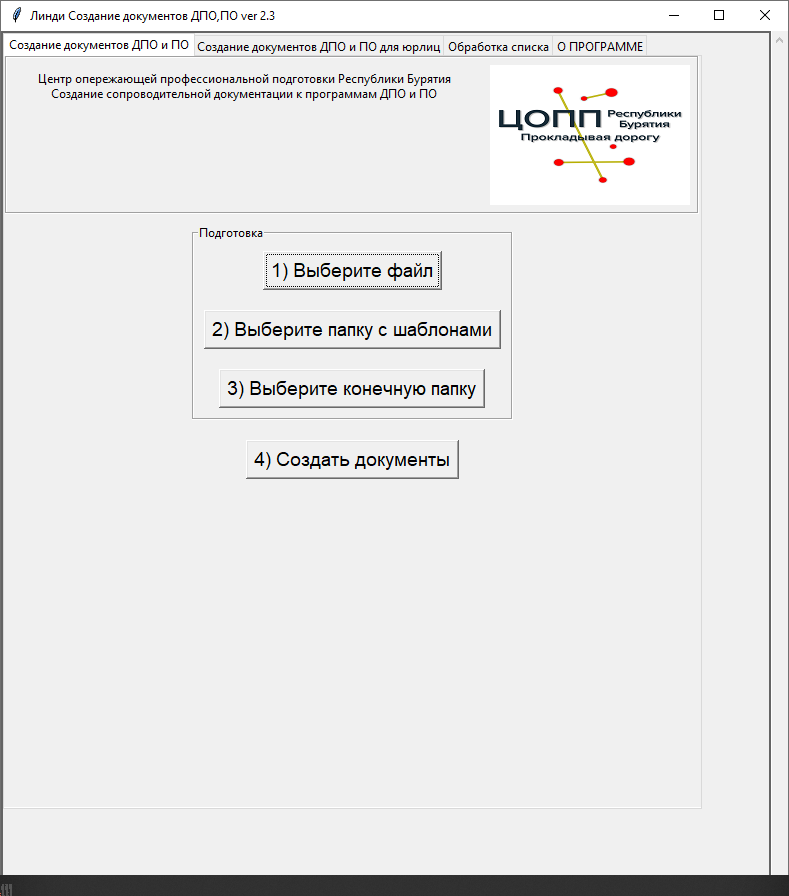

Назначение программы
Программа Линди предназначена для автоматизации делопроизводства по курсам дополнительного профессионального образования (ДПО) и профессионального обучения (ПО) в соответствии с требованиями законодательства.
Целевой аудиторией являются образовательные организации в которых нет работающих систем автоматизации образовательного процесса и весь процесс создания документации по курсам происходит вручную с помощью Microsoft Office (Word, Excel) или его аналогов.
За несколько минут программа создаст полный комплект документации (приказы, ведомости, табеля, справки, удостоверения, согласия и т.п.) используя только небольшую таблицу в формате xlsx (Excel и его аналоги) и шаблоны документов в формате docx по которым будут создаваться документы.
Можно гибко настраивать создаваемые документы, для этого нужно всего лишь прописать названия добавляемых колонок из таблицы xlsx в двойных фигурных скобках в шаблоне docx.
Программа бесплатна, работает в Windows и отечественных ОС, не требует интернета и локальной сети, работает как с Microsoft Office (Word, Excel) так и с его аналогами (Мой Офис, Libre Office и т.п.), не требует базы данных.
Программа внесена в реестр отечественного программного обеспечения
Ссылка на свидетельство РоспатентаЧто может программа
Входные данные
Программа использует в своей работе файл формата xlsx (Excel или его аналоги) в которых содержатся данные слушателей и файлы формата docx (Word и его аналоги) для создания справок, договоров и т.п.
Программа не использует в своей работе какие-либо базы данных
Выходные данные
В папке которую выбирает пользователь создаются файлы формата xlsx и docx
Интерфейс пользователя
При работе с программой используется графический интерфейс
Совместимость
Операционная система: Windows 10 x64, Linux x64 (Импортозамещенные ОС: Red OS, Alt Linux, Astra Linux)
Безопасность
Программа работает локально, не использует локальную сеть или сеть Интернет.
Исходные файлы xlsx и docx пользователя не изменяются программой.
Удобство использования
В интерфейсе программы используются вкладки, на каждой из вкладок находится все что нужно для работы конкретной функции программы.
В программе не используются меню различной степени вложенности, все шаги которые нужно выполнить пользователю пронумерованы по порядку.
Интерфейс ориентирован на пользователей с невысоким уровнем компьютерной грамотности.
Поддержка
Предложения, замечания по работе программы отправлять на почту itdarhan@yandex.ru
Скачать
Чтобы начать работу, скачайте инструкцию
Скачать инструкцию по установке и началу работыВ руководстве пользователя вы найдете подробное пошаговое руководство по работе с каждой из функций программы.
Скачать руководство пользователяСкачайте и распакуйте архив с материалами для внедрения. Персональные данные используемые в примерах, являются искусственно сгенерированными.
Скачать материалы для внедренияОбучающие видео по работе с программой.
Обучающие видеоВыберите нужную версию Линди для скачивания.
Скачать версию Линди для Windows x64Скачать версию Линди для Linux x64